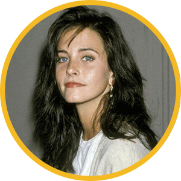
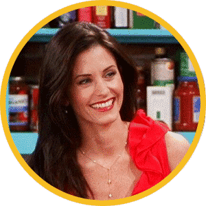
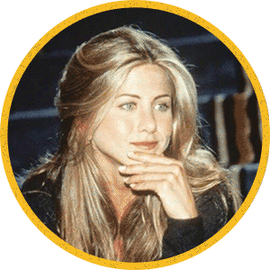
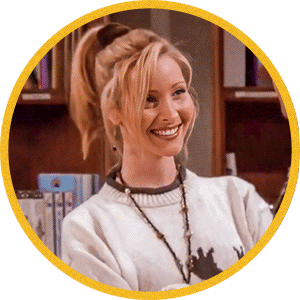
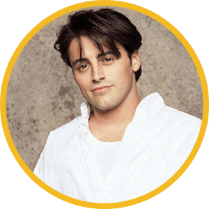
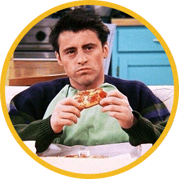
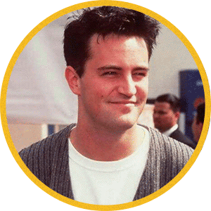
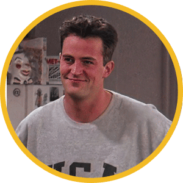
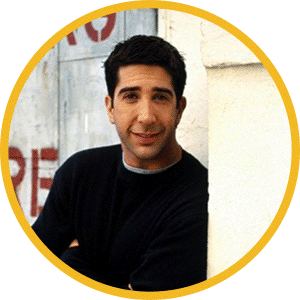
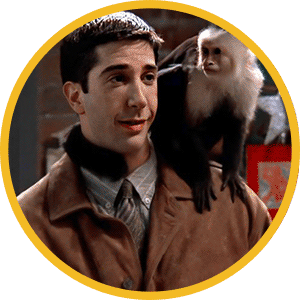

Courteney Cox
- Nombre: Courteney Bass
- Apellidos: Cox
- Profesión: Actriz
- Origen: Birmingham, Alabama, Estados Unidos
- Fecha de nacimiento: 15 Junio 1964
- Edad: 58 años
- Altura: 1,65 m
- Redes sociales: Twitter |
Instagram |
Facebook


Biografia
Courteney Bass Cox, más conocida como Courteney Cox, es una actriz estadounidense. Nació el 15 de junio de 1964
en Alabama, donde al principio residió junto a sus tres hermanos mayores y donde se graduó en el instituto.
Tras acabar esta etapa escolar se matriculó en la Universidad de Mount Vernon, que años más tarde pasaría a formar
parte de la Universidad George Washington, para estudiar Arquitectura. Sin embargo, no terminó la carrera ya que
decidió abandonarla y dedicarse al mundo de la interpretación y el modelaje.
Jennifer Aniston
- Nombre: Jennifer Joanna
- Apellidos: Aniston
- Profesión: Actriz
- Origen: Sherman Oaks, California, Estados Unidos
- Fecha de nacimiento: 11 Febrero 1969
- Edad: 53 años
- Altura: 1,65 m
- Redes sociales: Instagram |
Facebook

Biografia
Jennifer Joanna Aniston, conocida artísticamente como Jennifer Aniston, es una actriz de cine y televisión
estadounidense que nació en Los Ángeles, California, el 11 de febrero de 1969. Aunque también ejerce de directora
y productora de cine. Y sus influencias en el sector están muy claras: sus padres. De hecho, ambos eran actores y
alentaron su interés por estudiar arte dramático en la escuela secundaria. En cualquier caso, Aniston creció en la
ciudad de Nueva York, justo donde trabajó en distintas producciones de poca magnitud en sus primeros años de carrera
cinematográfica.
Por eso, a pesar de su aparición en películas como "For Dear Life" o "Dancing on Checker's Grave", realmente tenía
que trabajar en otros empleos a tiempo parcial. Desde teleoperadora hasta mensajera, por citar algunos. Ya en 1989
se mudó a Los Ángeles, su ciudad natal. Ahí obtuvo también sus primeros papeles en televisión. Sin duda, un formato
que le resultaría muy provechoso poco después. Papeles en series como 'Molloy' o 'Ferris Bueller'. Esta última, una
especie de adaptación para TV de la exitosa película "Ferris Bueller's Day Off". Un poco más adelante, ya en 1993,
protagonizaría la película de terror "La noche del duende". Un film que se ha convertido hoy en día en una película
de culto.
Lisa Kudrow
- Nombre: Lisa Valerie
- Apellidos: Kudrow
- Profesión: Actriz
- Origen: Encino, California, Estados Unidos
- Fecha de nacimiento: 30 Julio 1963
- Edad: 58 años
- Altura: 1,65 m
- Redes sociales: Twitter |
Instagram |
Facebook


Biografia
Lisa Kudrow es una actriz y creadora de series estadounidense. Estudió Biología en el Vassar College de Nueva York,
algo que compatibilizaba con la actuación, que para ella simplemente fue un hobby. Pese a todo, fue extra en algunas
películas, pero se dedicó fundamentalmente a la investigación tras graduarse, formando parte del laboratorio de su
padre, Lee Kudrow, que era médico. Durante ocho años, estudió la relación entre las cefaleas de racimo y el desarrollo
de los niños zurdos.
A finales de los ochenta, el cómico Jon Lovitz, que era amigo de su hermano, le sugirió que se apuntase a grupos de
improvisación. Debutó en The Groundings, pero tras ello desfiló por un gran número de compañías que cambiaron su
perspectiva sobre la actuación e hicieron que se apasionase más por ello. Entre estos grupos, destaca 'Unexpected
Company', en donde coincidió con el presentador Conan O'Brien. Así, en 1989, debuta en la película para la televisión
'Married to the Mob' y también aparece en un episodio de 'Cheers'. Sus apariciones en series en este momento son
meramente episódicas, con papeles en 'Newhart', 'A fuerza de cariño' y 'Lifestories'.
Matt LeBlanc
- Nombre: Matthew Steven
- Apellidos: LeBlanc
- Profesión: Actor
- Origen: Newton, Massachusetts, Estados Unidos
- Fecha de nacimiento: 25 Julio 1967
- Edad: 54 años
- Altura: 1,65 m
- Redes sociales: Twitter |
Instagram |
Facebook


Biografia
Matthew Steven LeBlanc es un actor estadounidense. Nació el 25 de julio de 1967 en Newton, Massachusetts. Hijo de una directora
administrativa y de un mecánico, ambos con raíces francesas, aunque su madre tenía también orígenes italianos, fue con 17 años
cuando el artista decidió mudarse a Nueva York para seguir su sueño de convertirse en modelo. Debido a que fue rechazado por no
ser lo suficientemente alto, optó por reciclarse y probar suerte como actor.
En 1987, protagonizó su primer anuncio publicitario, para la marca de kétchup Heinz. Un año después, formó parte del reparto
principal del drama juvenil 'TV 101', emitido por CBS y que solo tuvo una temporada. En 1991, le llegó su primer papel por el
que fue conocido por el público, el de Vinnie Verducci en la icónica sitcom 'Matrimonio con hijos'. El novio de la hija de la
familia, Kelly, interpretada por Christina Applegate. Aunque su intervención fue de reparto, protagonizó dos de los spin-offs
de la mítica serie de Fox, 'Top of the Head' y 'Vinnie & Bobby'.
Tras finalizar su aparición en todas estas producciones, LeBlanc apareció en varios videoclips de artistas como Bon Jovi, Alanis
Morissette, Tom Petty & the Heartbreakers o Bob Seger. También tuvo apariciones en ficciones como 'Class of '96', 'Red Shoes Diaries'
o 'Rebel Highway'.
Sin embargo, fue en 1994 cuando obtuvo el papel por el que continúa siendo recordado por el público, el de Joey Tribbiani en la mítica
'Friends'. Su papel, el del encantador italo-estadounidense aspirante a actor que terminaba protagonizando uno de los culebrones con
más audiencia de la televisión, conquistó al público y LeBlanc, junto con Jennifer Aniston, Matthew Perry, Courteney Cox, Lisa Kudrow y
David Schwimmer, se convirtieron en las grandes estrellas de la pequeña pantalla durante todo un decenio.
Aunque el actor arrasaba con la sitcom, durante su tiempo en 'Friends' aprovechó para aparecer en varias películas como "Lookin' Italian",
"Ed, el chimpancé", "Perdidos en el espacio" o las dos entregas de "Los ángeles de Charlie".
LeBlanc fue Tribbiani en las diez temporadas que se emitieron en NBC entre 1994 y 2004. Por este papel, fue candidato en tres ocasiones al
Emmy, al Globo de Oro y en una a los Premios del Sindicato de Actores. Tal fue su popularidad, que fue el único en tener su propio
spin-off, 'Joey', que no tuvo el mismo respaldo de crítica y público y fue cancelado tras dos temporadas.
Matthew Perry
- Nombre: Matthew Langford
- Apellidos: Perry
- Profesión: Actor
- Origen: Williamstown, Massachusetts, Estados Unidos
- Fecha de nacimiento: 19 Agosto 1969
- Edad: 52 años
- Altura: 1,83 m
- Redes sociales: Twitter |
Instagram |
Facebook


Biografia
Matthew Langford Perry es un actor de nacionalidad canadiense y estadounidense. Nació el 19 de agosto de 1969 en
Massachusetts. Hijo del actor John Bennett Perry y de la periodista canadiense Suzanne Marie Morrison, secretaria
de prensa del Primer Ministro Trudeau, el intérprete se fue a vivir precisamente con su madre cuando todavía no
había cumplido ni siquiera el primer año de edad, dado que ambos progenitores decidieron divorciarse.
Él, criado y educado en Ontario, decidió con 15 años hacer las maletas y mudarse a Los Angeles para formarse y
probar suerte en el mundo de la interpretación. En 1987 se graduaba, si bien desde 1979 ya había logrado trabajar
en la televisión.
Debutaba en la pequeña pantalla con un capítulo de la serie '240-Robert' y tras participar también como episódico
en 'Not Necessarily the News' y 'Silver Spoons', en 1987 se hacía con su primer papel importante como regular en
'Boys Willl Be Boys'.
David Schwimmer
- Nombre: David Lawrence
- Apellidos: Schwimmer
- Profesión: Actor
- Origen: Astoria, New York, Estados Unidos
- Fecha de nacimiento: 2 Noviembre 1966
- Edad: 55 años
- Altura: 1,85 m
- Redes sociales: Twitter |
Instagram |
Facebook


Biografia
Nacido en Nueva York, se mudó a Los Ángeles con su familia a la edad de dos años y comenzó su carrera como actor al participar en obras
escolares escenificadas en la Beverly Hills High School. En 1993, se graduó de la Universidad del Noroeste con un título Bachiller
universitario en letras en teatro y lenguaje. Después de su graduación, fue cofundador de la Lookingglass Theatre Company. Sin embargo,
durante gran parte de finales de la década de 1980 vivió en Los Ángeles y estuvo desempleado. En 1989, Schwimmer apareció en el telefilme
A Deadly Silence y, a comienzos de la década de 1990, asumió varios papeles televisivos en series como L.A. Law, The Wonder Years, NYPD
Blue y Monty. Aparte de aparecer en televisión, realizó su primer estelar en la película The Pallbearer (1996), a la cual le siguieron
participaciones en Kissing a Fool (1998), Six Days Seven Nights (1998), Apt Pupil y Picking Up The Pieces (2000). Tras esta serie de
cintas se involucró en la miniserie Band of Brothers (2001), en el papel de Herbert Sobel.
Tras finalizar Friends, en 2005 interpretó el papel principal del drama Duane Hopwood. Otros de sus papeles cinematográficos incluyen
la película animada por computadora Madagascar (2005), la comedia afroamericana Big Nothing (2006), el thriller Nothing But the Truth
(2008) y Madagascar 2: Escape de África (2008). Además, hizo su debut teatral de Londres con el papel protagonista en Some Girl(s) en
2005, por el cual recibió críticas favorables. En 2006, debutó en Broadway con The Caine Mutiny Court-Martial, y finalmente como director
de cine con la comedia Run Fatboy Run, estrenada en 2007. Al año siguiente dirigió la producción teatral de Fault Lines.